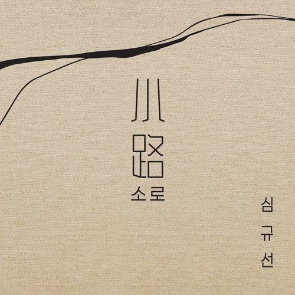

 수능을 준비하던 시기에 막막한 순간이 많이 찾아왔어요. 무엇보다 대학 입시를 위해 남들과 성적 경쟁을 하니 혼자가 된 듯한 기분을 많이 느끼는 게 가장 힘들었던 것 같아요. 물론 그때도 저를 응원해준 친구와 가족이 있었지만, 소로를 듣고 노래도 굉장한 힘이 된다는 사실을 알게 된 것 같아요. 제가 가장 좋아하는 가사는 '남들처럼 빠르게 달리진 못 해도 터벅터벅 걸어온 날들이 쌓였소' 입니다. 모든 가사가 문학 지문에 나올 것처럼 서정적이고 잔잔한 곡이어서 여러분에게도 분명 위로가 될 거예요!